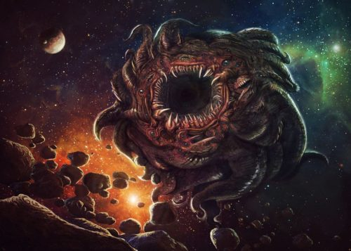

|
|
AZATHOTH

“The Blind Idiot God’, Azathoth is basically a sentient singularity, sitting at the very center of the universe. Azathoth lies constantly in a deep slumber, kept there by other powerful deities who constantly sing to the creature to keep him in his induced, eternal hibernation. For if Azathoth were to ever awaken, the entire universe would end just like that. All it would need is a moment where it opens its eyes and boom! Everything just gone.
|